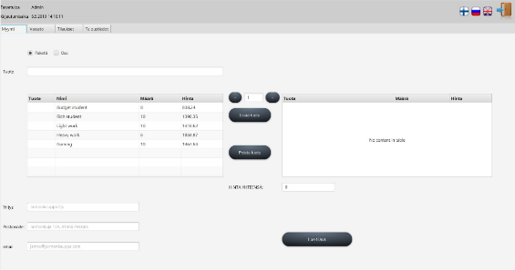
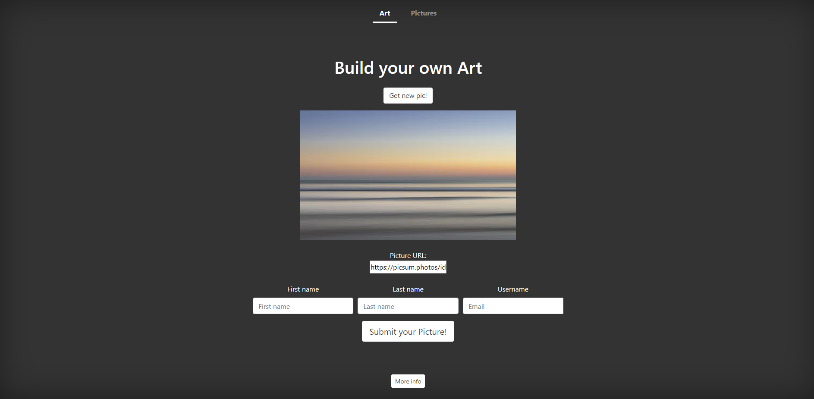
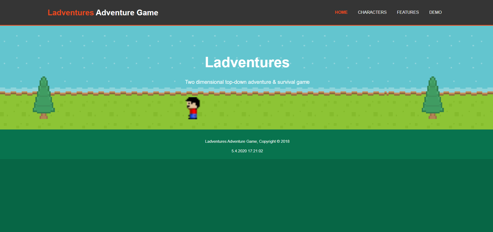

About me!
On this website I will tell you about my past studies and other interesting stuff about myself!
Hello! My name is Sami Sikkila. I am currently studying Information and Communication Technology at Metropolia University of Applied Sciences. Previous to my current studies I graduated as a logistics engineer. During my logistics studies I didn’t apply to become exchange student and I regretted it for years. Now I am glad that I didn’t as it gave me the opportunity to apply now. While preparing to graduate I took several courses of programming to fill up my credits and I found my true calling. Now I feel highly motivated to learn new things, confront new challenges and gain new experiences.
Because of my past experiences studying and working in the field of logistics, I have unique insight into how systems and processes work. I still find myself wanting to deepen that insight and I am confident that MRU is a great place to do that. I have been studying several programming technologies, such as AWS, in my free time.
My goal academically is to deepen my understanding of different technologies to the level where I can confidently apply for variety of positions globally. I wish to secure a position in a company where I can continue to improve myself both personally and professionally. At some point of my career I wish to advance and take on small leadership roles. To do that I need to work on my communication skills as communication is critical part of leadership. I wish to be able to travel. I want to learn about different cultures.
My Projects
Computer Store
Computer Store Management software was done as a school project. The project was completed using multiple tools and softwares that are used in real program development. Such tools included:
- Scrum
- Hibernate
- Git
- Task Manager
- Jenkins
- MariaDB
The length of the project was approximately 6 months. We implemented a database on our school server that the program contacted. Database was done with MySQL advance queries were done by using hibernate.
The code of the project is located here!
Webpage API
This project was created to practice using a public API. We used API to retrieve a picture from the internet and saving it to a database. The initial idea behind the project was that people could upload their own pictures via the API that we created. User could modify the picture with multiple tools or filters and then save it into the database.
After users have uploaded their pictures they become visible for other users in the Pictures-page. There different users can vote for the best picture and comment the pictures that other users have uploaded to the site.
Ladventures
The Ladventures Adventure Game was also created as a school project on my first year of studies. The game was programmed by a group of four students. The programming language that we used was C#.
The game is a very simple 2D game that doesn't take too long to complete. We tried to include as many different aspects into the game. The game has quests or missions that you need to complete to advance in the game. Also projectiles was introduced into the game that will hurt the player if player doesn't dodge them.
I created the above animation in a 3D Modeling course on my first year of studies. All of the elements shown in the video are made by me using 3DS Max software.